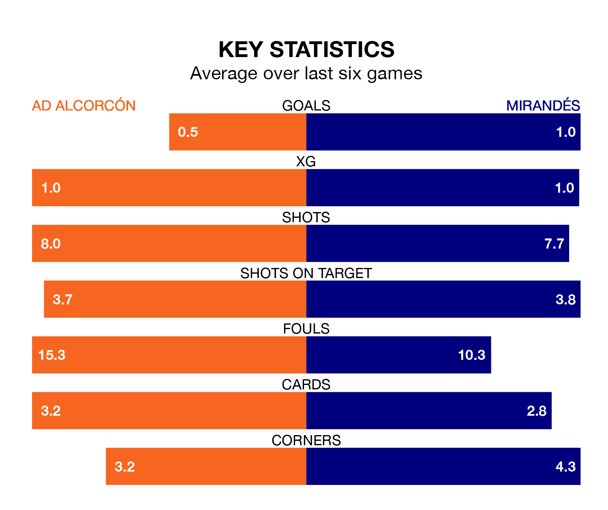

Struggling AD Alcorcón face Mirandés at the Estadio Santo Domingo on Saturday looking to build on a win in their last league outing.
After securing all three points with a 2-1 victory over SD Amorebieta on December 21, Alcorcón sit 20th in the Segunda División.
They travel to play a Mirandés side 13th in the standings, who were held in their last match, 0-0 against Elche CF, on December 19.
With 19 goals in 21 games so far this season, Alcorcón are scoring at below the league average rate with 0.9 goals per game. And they are conceding more than average, letting in 33 goals at a rate of 1.6 per game.
Mirandés, meanwhile, are above average scorers, with 1.4 goals per game, compared to a league average of 1.2. They have conceded 1.3 goals per game.
In the last 10 years, Alcorcón and Mirandés have played each other on 14 occasions. Alcorcón won six of them, Mirandés four, and they drew four times.
On average, Alcorcón scored 1.3 goals and Mirandés 1.2 in those matches.
Their last meeting was on August 14, when Mirandés won 4-0 at home.
In Carlos Martín, the away team have one of the league's most on-form strikers so far this season. He has notched eight goals in 19 appearances, to sit sixth in the scoring charts.
His goal rate of one every 161 minutes is slightly quicker than that of Dyego Sousa, the hosts' top scorer with a goal every 165 minutes, and a total of four goals in 12 games.
Alcorcón are in mixed form in the Segunda División, with two wins and a draw from their last six games.
With two wins and four draws over that period, Mirandés's form is better – they have taken 10 points from 18, compared to Alcorcón's seven.
Updated: 10:50, 10/01/24